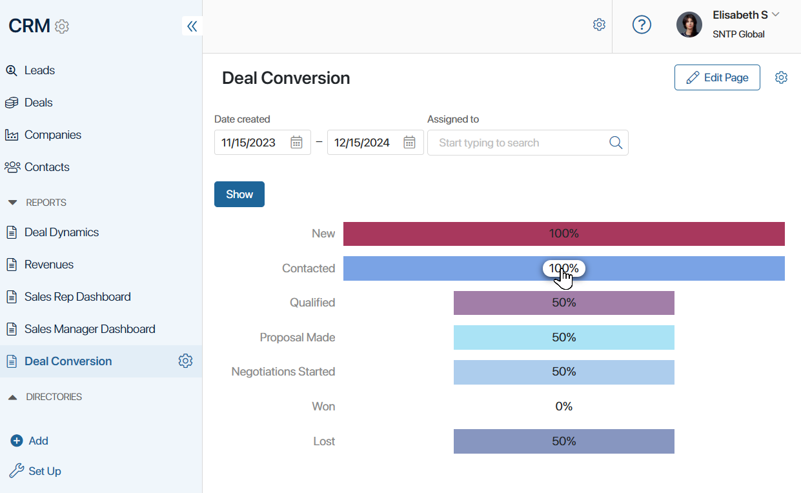
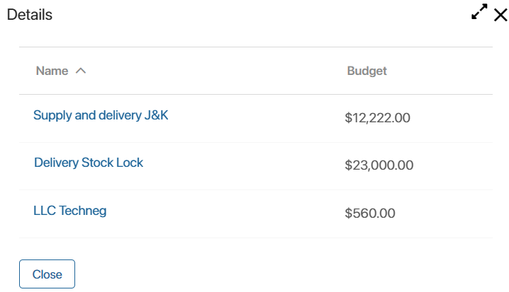

Leads or Deals Conversion is a report that shows how many items have been moved from one status to another. The chart shows the percentage difference between the number of items in each status of a pipeline.
Such a report will be useful for the sales department. For example, they can use this chart to compare the total number of deals with the number of successfully closed or lost ones. You can also use this report for any app with statuses.
To create this report, use the Chart widget. You can place it on a separate page for easy reference.
Configure the chart
Let’s consider the item conversion report on the example of the Deals app.
The report can be configured by users included in the Administrators group. To do this:
- Create a page and click the Add Widget button.
- Select the Chart widget. The Settings window will open.
- In the App field, select the Deals app. Additional options and the Custom Filters tab will appear.
- Specify the settings:

- Category. Select the Status option.
- Value. Select the Amount option.
- Calculation type. Select the option:
- Item conversion. When building the report, the number of items that passed through each status added in the pipeline will be counted. For lost items, each previous status will be taken into account when calculating conversion.
- Item conversion (sales). This type of calculation differs in that it has separate processing for lost leads and deals. For example, if a deal went from New to Lost status, only the statuses through which the deal actually passed will be considered when generating the report.
- Data display. Select any option. Conversion graphs always display the result in percentages.
- Sort by Indicator. Leave the field set to No.
- Show number. Leave the field empty to display conversion in the chart by all items.
- Chart type. Select one of the available: Pipeline with drill down, Vertical Bars, Horizontal Bars, Drilldown bar chart, vertical, or Drilldown bar chart, horizontal.
To view the list of items that each column is based on in a chart, use drill-down chart types.
- Color scheme. Select the colors of the chart.
- Chart size. Select the Dynamic option to let the chart’s size adjust to the amount of data is displayed.
- On the Custom Filters tab, specify the app fields that will be used to filter data in the chart. The Pipeline and Date created fields are selected by default.
- You can select certain pipelines to build the report. They will be displayed on different tabs in the chart. To do this, go to the Statuses Display tab in the widget settings and perform the following actions:
- Enable the Show pipelines option.
- Check the pipelines that will be shown in the chart as separate tabs.
- In each pipeline, enable the display of all statuses by clicking the Select All button.
- When working with the Pipeline with drill down, Drilldown bar chart, vertical or Drilldown bar chart, horizontal types, you can view the list of items on the basis of which each column in the report was formed. To do this, the user can click on a value in any column of the chart.
To select the app properties that will be displayed in the list, go to the widget settings. Then, on the Display Settings tab, check the required options.
- Save the settings and click the Finish Editing button in the upper right corner of the page.
To change the chart settings, click the Edit Page button in the upper right corner of the page, select the widget and click the gear icon.
How to read the chart
To generate the conversion report, do the following:
- Specify a period. Deals created during this period will be included in the report. The default period is the current month.
- Select a pipeline. Statuses that it includes will be shown in the report.
- Fill out the rest of the fields added by the administrator and click Show.
In the chart that appears, you can see the deals conversion percentages for each status. Here you will see how many deals were closed successfully out of the total percentage of all deals created.
Since the Show pipelines option is enabled in the widget settings, the chart has each pipeline on a separate tab.

In the settings, the Pipeline with drill down chart type is specified, so the user can click on the value in any chart column and view the list of deals in each of the statuses. The opened window will display the app properties selected in the widget settings, such as the name and budget of the deal. By clicking on a deal in the list, the user will be able to go to its page.
